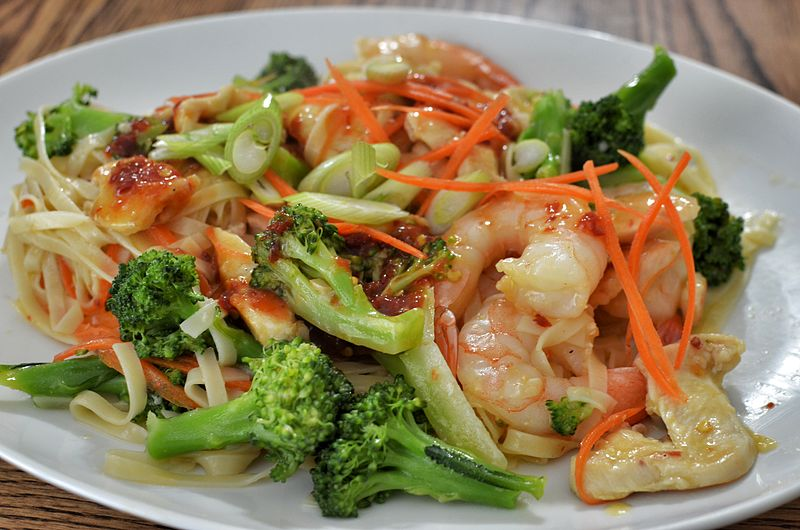

Shrimp and vegetable stir fry

Description
A very delicious recipe with a lot of flavor and nutrients
A true asian cuisin classic
Ingredients
- 2lb shrimp
- Rice noodles
- Roasted Sesame oil
- Chopped mushrooms, cabbage, carrots and bell peppers (red)
- Teriyaki Seasoning
- Ginger powder
- Salt
- Garlic Powder
Steps
- Take your chopped vegetables and toss then in a pot with sesame oil, garlic and ginger powder,
- add seasonings to the ground beef and mix well. put the beef in a pan with high heat to cook. stir from time to time to avoid sticking to the pan.
- Heat some sesame oil in a pan and add the shrimp, season with salt, garlic and teriyaki seasoning.
- When the shrimps are ready, set them aside and on the same pan add about two cupos of water and boil it, when its hot, toss your noodles and turn the heat off, wait 5-7 minutes untill the noodles are soft and drain to remove water
- tos everything in a large pot (or a wok if you have one) add more oil and stir fry for about 10 minutes.
- Serve and enjoy
back to homepage